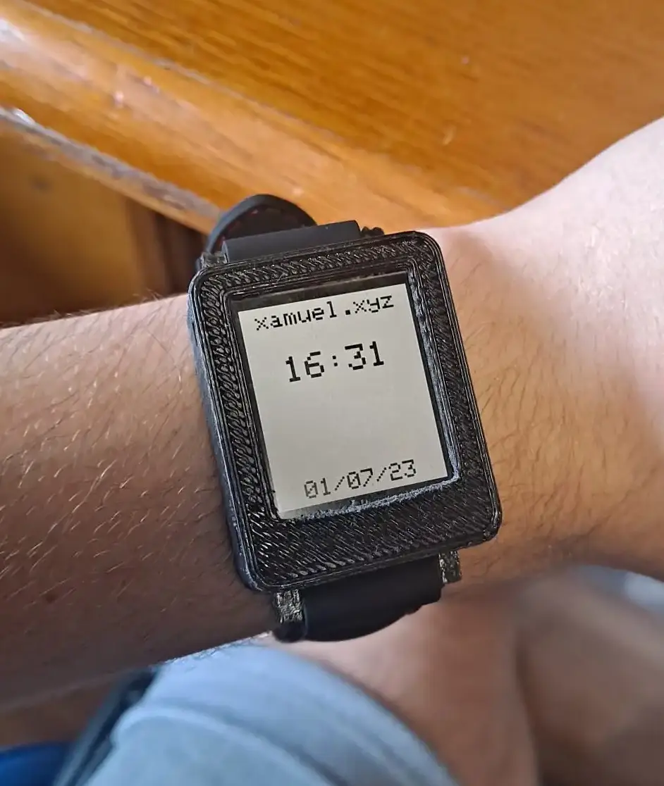

LCDwatch
⚠ Project in progress ⚠
This watch is kind of an iteration of the binwatch. It has a Sharp Memory LCD for easy reading. Thanks to the reflective nature of this display, it consumes little power and is perfectly visible in the sunlight.
The watch has a STM32F103C8T6 as its microcontroller, 3 buttons for navigation, and a lithium-ion battery for power. The STM32 has a RTC incorporated for time-keeping. With its 400 mAh battery, the watch lasts for around a month on. The battery is rechargeable via USB-C. It can be programmed through the USB-C port or through the SWD interface with an ST-link.
> Display
As I've said, the display is from Sharp, concretely the LS013B7DH05, and it's one of their memory LCDs. They are similar to e-paper displays, but with a much higher refresh rate. The display is 144x168 pixels and 1.26" diagonally. The display might look familiar — that's because Sharp Memory LCDs were the displays used in the Pebble watches. The Pebble also used a STM32.